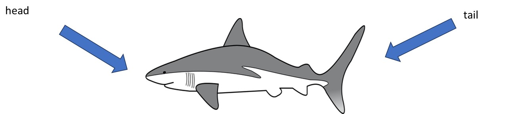
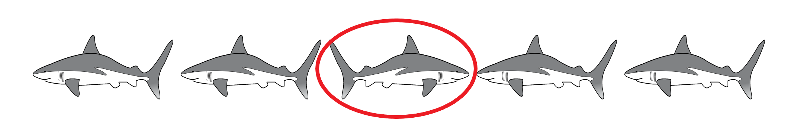
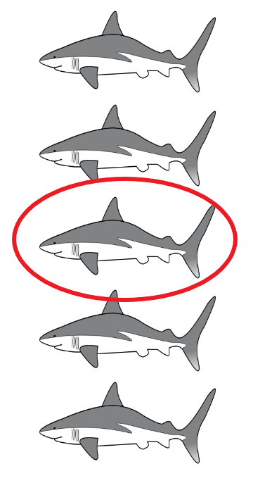
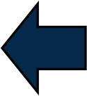
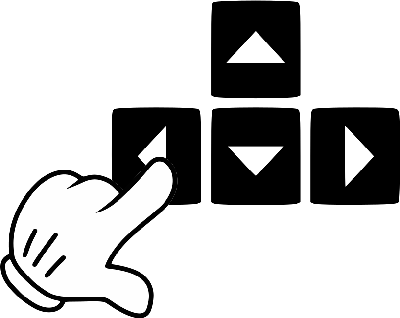

How to Play
You and your team are underwater to study sharks. You want to study them by taking pictures of one special shark. In order to do so, you must tell your team which direction the shark is swimming.
For example, this shark



is pointed this way

is swimming this way

next page